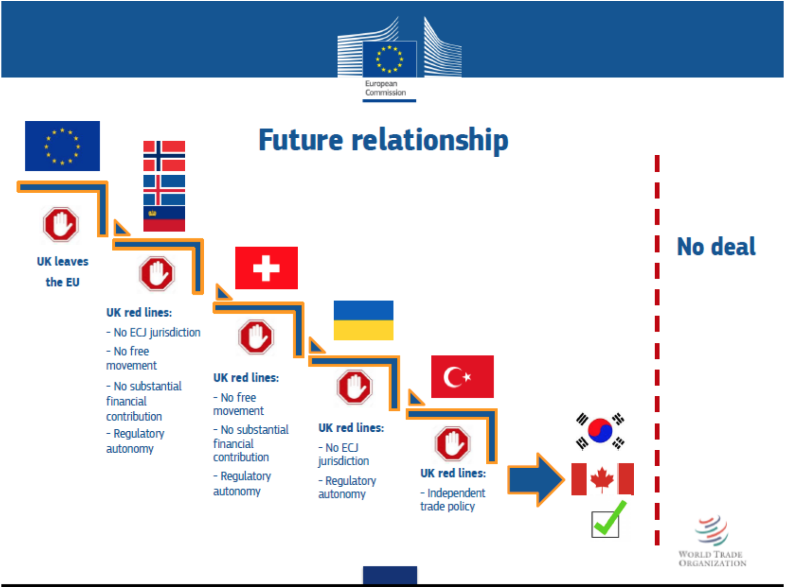

Is The EU Serious About Reaching A Deal?
5th May 2020
The UK-EU trade talks are back in full swing, or rather as much as it's feasibly possible to be whilst still observing social distancing. Progress had stalled for a bit due to both teams coming down with the virus but with everyone now recovered things are back on track with the most recent negotiating round concluding on 24th April.
With the first major deadline at the end of July approaching you’d think that there would be a renewed impetus to get the main outline finalised but that seems to be elusive. Despite many areas of agreement both sides remain at odds in some key areas with no obvious solutions emerging from either party.
The UK is sticking to their desire to structure our future relationship as a series of separate agreements rather than one overarching agreement as the EU prefers. The EU has in turn doubled down saying that because of our proximity a deal must include fishing rights that remain largely unchanged, so called “level playing field” provisions where the UK maintains regulatory alignment with the EU in many policy areas and for operation of the treaty to be adjudicated by the European Court of Justice. The UK rejects all three.
The lack of movement is worrying and while there have been some suggestions that the UK might move from its opening gambit on the structure of a deal, the EU have shown no such sign of doing so on their more contentious asks. The fact that even at this late stage Brussels unflinchingly clings to proposals that have no precedent in their other free trade agreements, it makes one question whether they are actually serious about reaching a deal.
In many ways it’s not altogether surprising as from the very outset of Brexit the EU have sought to use the process itself to further their own ends. They naturally didn’t want the UK to leave so sought to make the process so difficult and the options so unpalatable in the hope that the government would somehow drop implementing the largest vote for anything in British history. Ensuring a sensible departure to allow both sides to coexist wasn’t on the cards as far as they were concerned.
Any calls for the UK to have independence in any meaningful sense but also have a close and cordial relationship with the EU was derided as “Cherry picking” by Brussels. They then nonsensically demanded that a permanent solution for the Irish Border had to be established before any talks about trade and the UK alone had to come up with the solutions. We had to unilaterally solve a bilateral problem, an impossible task. The only remedy to this particular conundrum the EU was prepared to offer was virtual annexation of NI, a bizarre suggestion considering their stated desire to protect the Good Friday Agreement.
As we all know this strategy was a massive failure. Their intransigence and borderline hostility lead to a change of Prime Minister, one that was prepared to to walk away. To salvage any semblance of a deal and avoid a major economic shock, at a point where the EU was entering a pre-recessionary state, they had to walk back on their ghastly Northern Ireland stance. They started with a receptive government in London and ended up with a new government more determined to leave than ever.
Having made a slight hash of the first round you’d have thought the EU would then have changed tack and focus on securing a mutually beneficial FTA to bury the squabbles of the past but instead they carried on using the same playbook. They disregarded the Political Declaration to suit their own ends when they finalised their negotiating mandate and added in more onerous conditions than were previously agreed.
When the government announced their intention to negotiate a Canada style FTA, they said that wasn’t on offer despite previously saying so. The possible only option for the future relationship they said was something that resembled EU membership with no voting rights. Their reason for this was that the UK was nearby so couldn’t have too much control over its affairs, a foreign policy stance you’d more likely associate with Russia.
The options laid out by the EU.
The dogmatic use of process continued on as before. With a little over a year from the signing of the Withdrawal Agreement to the end of the transition period, the time to reach a new accord was relatively short. Even though they had agreed to this the EU were in no hurry to advance things, they didn’t start work on their negotiating mandate until the moment the UK was no longer a member at the end of January and then took another month to finalise it. All the while telling us there wouldn’t be enough time and heavily hinting that we would need to extend the period.
In the face of this the government remained resolute, making clear that they were not asking anymore of the EU than what they had already granted to other third countries. Rather than engage with the UK as equals the EU has carried on with the game playing by trying to resurrect a previous point of contention, Northern Ireland.
The Northern Ireland Protocol in the Withdrawal Agreement was rather key in the last phase as it unlocked a deal acceptable to both sides. The protocol itself basically amounts to a customs transit arrangement for goods heading to the Republic of Ireland via Northern Ireland. NI also remains aligned to EU rules on food and manufactured goods, as long as the NI Assembly approves, to eliminate the need for any processes on the actual land border itself.
Now initially the UK and EU were of one mind on how the protocol was supposed to work, with even Taoiseach Leo Varadkar concurring with Prime Minister Boris Johnson. However at 11pm on 31st January the EU’s interpretation of it changed, as far as they were concerned, NI was remaining in the Single Market and the Customs Union, despite it not being anywhere near as clear cut as that in the text.
Brussels then began demanding that the UK immediately start preparing to institute full regulatory and customs checks on all NI bound traffic and began to insinuate that the UK was reneging on its commitments. These accusations started flying even before the first meeting of the Joint Committee, the body that decides the specifics of the protocol’s implementation.
The acts of bad faith intensified as time went on. Immediately after the inaugural meeting of a UK-EU subcommittee to examine options for enacting the NI protocol the EU released a technical note detailing everything they expected to be put in place, all of it in line with their relatively new and maximalist interpretation. A technical note they didn’t share with the UK delegation.
The EU then took their interpretation even further this April. In order to monitor the enforcement of the protocol, Brussels requested permission to open an embassy in Belfast which was summarily rejected twice by the UK government. The reason for this was that under Article 12 of the NI Protocol, enforcement is the responsibility of the UK authorities but they are also bound to facilitate inspections by EU officials. Ultimately the government decided that a permanent office was unnecessary and that ad hoc visits would be sufficient.
Rather than respect diplomatic protocol and accept the UK’s discretion in the matter they then decided to play dirty. To try and confect a public row and further their narrative that the UK is backtracking on their commitments they briefed the Irish outlet RTE News, claiming that an office in Belfast had been promised to them.
The evidence they presented consisted of letters between the Foreign Office’s Permanent Secretary and the EU’s chief diplomat discussing possible offices in Belfast, Edinburgh and Cardiff after Brexit. However the letters in question dated from February 2019, under Theresa May’s administration and the discussions related to arrangements for the previous (now defunct) iteration of the Withdrawal Agreement. With no explicit right to an embassy finding its way to the final text and their account being thoroughly denied by former British officials their claims remain tenuous at best.
While the past four years may have been an endless stream of tiresome games from our continental friends, I am still hopeful that a deal can be struck. As I said earlier there is a huge amount of agreement between the parties but movement will be required from both sides. If the EU can respect that the UK will not relinquish its fisheries and accept regulatory alignment I would wager that the UK could move in other areas to accommodate, but the window for that is closing rapidly.
The situation could soon change though. This week sees the first round of the UK-US trade talks, with any luck this will focus minds in Brussels and help them realise that they aren’t the only game in town.